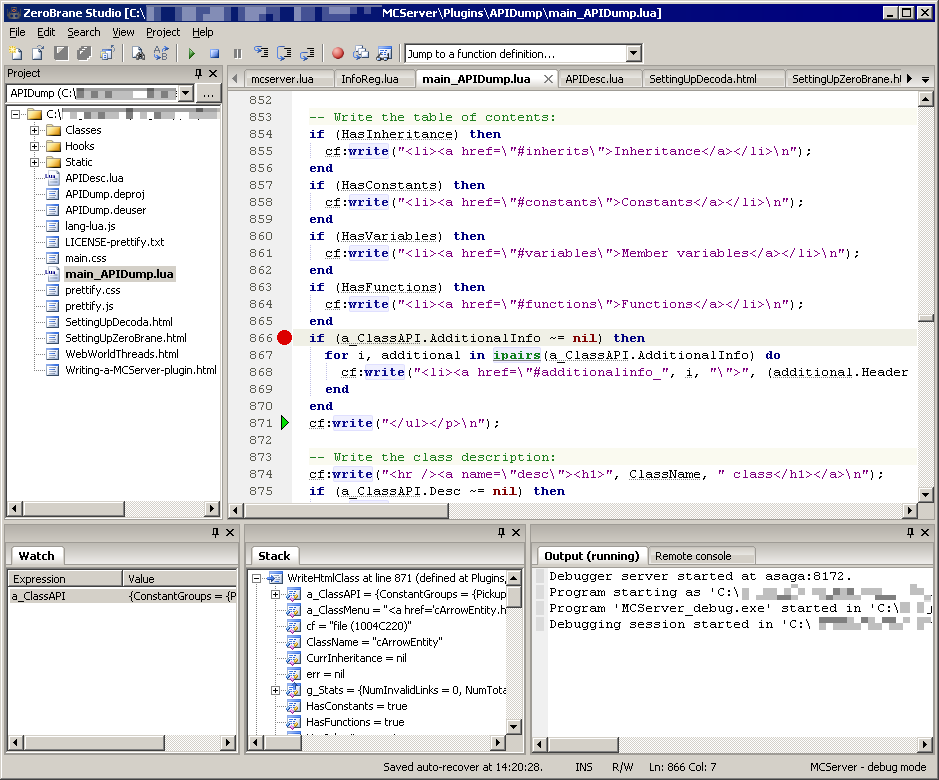

Setting up the ZeroBrane Studio IDE
This article will explain how to set up ZeroBrane Studio, an IDE for writing Lua code, so that you can develop Cuberite plugins with the comfort of an IDE.
 About ZeroBrane Studio
About ZeroBrane Studio
To quickly introduce ZeroBrane Studio, it is an IDE for writing Lua code. It has the basic features expected of an IDE - it allows you to manage groups of files as a project, you can edit multiple files in a tabbed editor, the code is syntax-highlighted. Code completion, symbol browsing, and more. It also features a Lua debugger that allows you to debug your Lua code within any application that uses Lua and can load Lua packages. It is written using the multiplatform WxWidgets toolkit, and runs on multiple platforms, including Windows, Linux and MacOS.
Here's a screenshot of a default ZBS window with the debugger stepping through the code (scaled down):

As you can see, you can set breakpoints in the code, inspect variables' values, view the Lua call-stacks.
ZBS is open-source, the sources are on GitHub: https://github.com/pkulchenko/ZeroBraneStudio. The project's homepage is at http://studio.zerobrane.com/.
First-time setup
Since ZBS is a universal Lua IDE, you need to first set it up so that it is ready for Cuberite plugin development. For that, you need to download one file, cuberite.lua from the ZBS's plugin repository. Place that file in the "packages" folder inside your ZBS's folder. Note that there are other useful plugins in the repository and you may want to have a look there later on to further customize your ZBS. To install them, simply save them into the same folder.
Next you should install the code-completion support specific for Cuberite. You should repeat this step from time to time, because the API evolves in time so new functions and classes are added to it quite often. You should have an APIDump plugin in your Cuberite installation. Enable the APIDump plugin in the server settings, it's very cheap to keep it enabled and it doesn't cost any performance during normal gameplay. To generate the code-completion support file, enter the api command into the server console. This will create a new file, "cuberite_api.lua", next to the Cuberite executable. Move that file into the "api/lua" subfolder inside your ZBS's folder. (Note that if you had the "mcserver_api.lua" file from previous versions, you should remove it)
After you download the cuberite.lua file and install the completion support, you need to restart ZBS in order for the plugin to load. If there are no errors, you should see two new items in the Project -> Lua Interpreter submenu: "Cuberite - debug mode" and "Cuberite - release mode". The only difference between the two is which filename they use to launch Cuberite - cuberite_debug(.exe) for the debug option and "cuberite(.exe)" for the release option. If you built your own Cuberite executable and you built it in debug mode, you should select the debug mode option. In all other cases, including if you downloaded the already-compiled Cuberite executable from the internet, you should select the release mode option.
For a first time user, it might be a bit overwhelming that there are no GUI settings in the ZBS, yet the IDE is very configurable. There are two files that you edit in order to change settings, either system-wide (all users of the computer share those settings) or user-wide (the settings are only for a specific user of the computer). Those files are regular Lua sources and you can quickly locate them and edit them from within the IDE itself, select Edit -> Preferences -> Settings: XYZ from the menu, with XYZ being either System or User.
There is a documentation on most of the settings on ZBS's webpage, have a look at http://studio.zerobrane.com/documentation.html, especially the Preferences section. Personally I recommend setting editor.usetabs to true and possibly adjusting the editor.tabwidth, turn off the editor.smartindent feature and for debugging the option debugger.alloweditting should be set to true unless you feel like punishing yourself.
Project management
ZBS works with projects, it considers all files and subfolder in a specific folder to be a project. There's no need for a special project file nor for adding individual files to the workspace, all files are added automatically. To open a Cuberite plugin as the project, click the triple-dot button in the Project pane, or select Project -> Project directory -> Choose... from the menu. Browse and select the Cuberite plugin's folder. ZBS will load all the files in the plugin's folder and you can start editting code.
Note that although ZBS allows you to work with subfolders in your plugins (and you should, especially with larger plugins), the current Cuberite ZBS plugin will not be able to start debugging unless you have a file open in the editor that is at the root level of the Cuberite plugin's folder.
Debugging
You are now ready to debug your code. Before doing that, though, don't forget to save your project files. If you haven't done so already, enable your plugin in the settings.ini file. If you want the program to break at a certain line, it is best to set the breakpoint before starting the program. Set the cursor on the line and hit F9 (or use menu Project -> Toggle Breakpoint) to toggle a breakpoint on that line. Finally, hit F5, or select menu Project -> Start Debugging to launch Cuberite under the debugger. The Cuberite window comes up and loads your plugin. If the window doesn't come up, inspect the Output pane in ZBS, there are usually two reasons for failure:
- Your code in the currently open file has a hard syntax error. These are reported as "Compilation error" in the Output pane, double-click the line to go to the error
- ZBS cannot find the Cuberite executable. Make sure you are editting a file two or three levels down the folder hierarchy from the Cuberite executable and that the Cuberite executable is named properly (cuberite[.exe] or cuberite_debug[.exe]). Also make sure you have selected the right Interpreter (menu Project -> Lua Interpreter).
Once running, if the execution hits a breakpoint, the ZBS window will come up and a green arrow is displayed next to the breakpoint line. You can step through the code using F10 (Step Into) and Shift+F10 (Step Over). You can also use the Watch window to inspect variable values, or simply hover your mouse over a variable to display its value in the tooltip. Use the Remote console pane to execute commands directly *inside* the Cuberite's plugin context.
You can also use the Project -> Break menu item to break into the debugger as soon as possible. You can also set breakpoints while the Cuberite plugin is running. Note that due to the way in which the debugger is implemented, Cuberite may execute some more Lua code before the break / breakpoint comes into effect. If Cuberite is not executing any Lua code in your plugin, it will not break until the plugin code kicks in again. This may result in missed breakpoints and delays before the Break command becomes effective. Therefore it's best to set breakpoints before running the program, or while the program is waiting in another breakpoint.